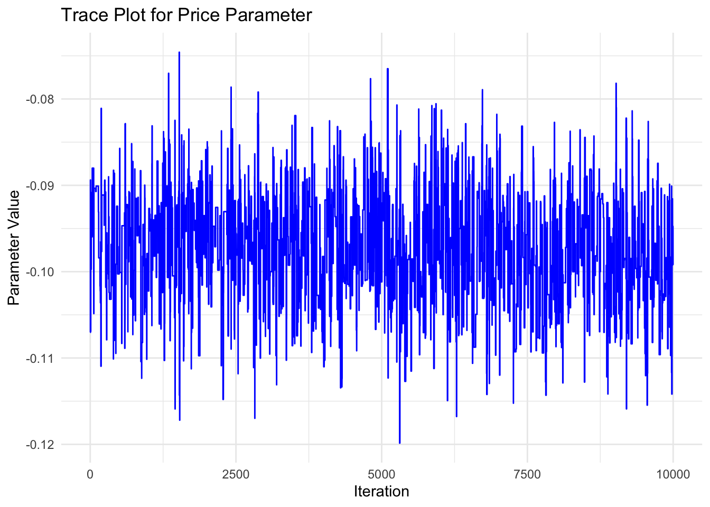
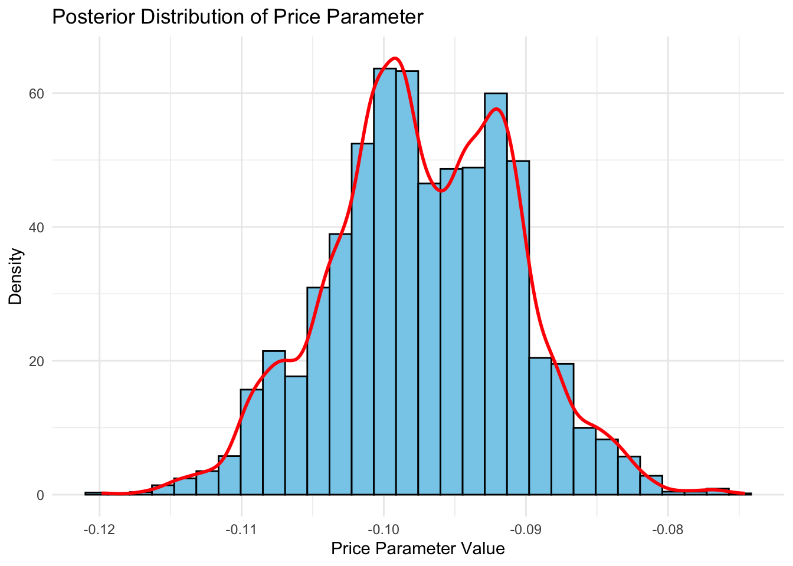

# set seed for reproducibility
set.seed(123)
# define attributes
brand <- c("N", "P", "H") # Netflix, Prime, Hulu
ad <- c("Yes", "No")
price <- seq(8, 32, by=4)
# generate all possible profiles
profiles <- expand.grid(
brand = brand,
ad = ad,
price = price
)
m <- nrow(profiles)
# assign part-worth utilities (true parameters)
b_util <- c(N = 1.0, P = 0.5, H = 0)
a_util <- c(Yes = -0.8, No = 0.0)
p_util <- function(p) -0.1 * p
# number of respondents, choice tasks, and alternatives per task
n_peeps <- 100
n_tasks <- 10
n_alts <- 3
# function to simulate one respondent’s data
sim_one <- function(id) {
datlist <- list()
# loop over choice tasks
for (t in 1:n_tasks) {
# randomly sample 3 alts (better practice would be to use a design)
dat <- cbind(resp=id, task=t, profiles[sample(m, size=n_alts), ])
# compute deterministic portion of utility
dat$v <- b_util[dat$brand] + a_util[dat$ad] + p_util(dat$price) |> round(10)
# add Gumbel noise (Type I extreme value)
dat$e <- -log(-log(runif(n_alts)))
dat$u <- dat$v + dat$e
# identify chosen alternative
dat$choice <- as.integer(dat$u == max(dat$u))
# store task
datlist[[t]] <- dat
}
# combine all tasks for one respondent
do.call(rbind, datlist)
}
# simulate data for all respondents
conjoint_data <- do.call(rbind, lapply(1:n_peeps, sim_one))
# remove values unobservable to the researcher
conjoint_data <- conjoint_data[ , c("resp", "task", "brand", "ad", "price", "choice")]
# clean up
rm(list=setdiff(ls(), "conjoint_data"))Multinomial Logit Model
This assignment expores two methods for estimating the MNL model: (1) via Maximum Likelihood, and (2) via a Bayesian approach using a Metropolis-Hastings MCMC algorithm.
1. Likelihood for the Multi-nomial Logit (MNL) Model
Suppose we have \(i=1,\ldots,n\) consumers who each select exactly one product \(j\) from a set of \(J\) products. The outcome variable is the identity of the product chosen \(y_i \in \{1, \ldots, J\}\) or equivalently a vector of \(J-1\) zeros and \(1\) one, where the \(1\) indicates the selected product. For example, if the third product was chosen out of 3 products, then either \(y=3\) or \(y=(0,0,1)\) depending on how we want to represent it. Suppose also that we have a vector of data on each product \(x_j\) (eg, brand, price, etc.).
We model the consumer’s decision as the selection of the product that provides the most utility, and we’ll specify the utility function as a linear function of the product characteristics:
\[ U_{ij} = x_j'\beta + \epsilon_{ij} \]
where \(\epsilon_{ij}\) is an i.i.d. extreme value error term.
The choice of the i.i.d. extreme value error term leads to a closed-form expression for the probability that consumer \(i\) chooses product \(j\):
\[ \mathbb{P}_i(j) = \frac{e^{x_j'\beta}}{\sum_{k=1}^Je^{x_k'\beta}} \]
For example, if there are 3 products, the probability that consumer \(i\) chooses product 3 is:
\[ \mathbb{P}_i(3) = \frac{e^{x_3'\beta}}{e^{x_1'\beta} + e^{x_2'\beta} + e^{x_3'\beta}} \]
A clever way to write the individual likelihood function for consumer \(i\) is the product of the \(J\) probabilities, each raised to the power of an indicator variable (\(\delta_{ij}\)) that indicates the chosen product:
\[ L_i(\beta) = \prod_{j=1}^J \mathbb{P}_i(j)^{\delta_{ij}} = \mathbb{P}_i(1)^{\delta_{i1}} \times \ldots \times \mathbb{P}_i(J)^{\delta_{iJ}}\]
Notice that if the consumer selected product \(j=3\), then \(\delta_{i3}=1\) while \(\delta_{i1}=\delta_{i2}=0\) and the likelihood is:
\[ L_i(\beta) = \mathbb{P}_i(1)^0 \times \mathbb{P}_i(2)^0 \times \mathbb{P}_i(3)^1 = \mathbb{P}_i(3) = \frac{e^{x_3'\beta}}{\sum_{k=1}^3e^{x_k'\beta}} \]
The joint likelihood (across all consumers) is the product of the \(n\) individual likelihoods:
\[ L_n(\beta) = \prod_{i=1}^n L_i(\beta) = \prod_{i=1}^n \prod_{j=1}^J \mathbb{P}_i(j)^{\delta_{ij}} \]
And the joint log-likelihood function is:
\[ \ell_n(\beta) = \sum_{i=1}^n \sum_{j=1}^J \delta_{ij} \log(\mathbb{P}_i(j)) \]
2. Simulate Conjoint Data
We will simulate data from a conjoint experiment about video content streaming services. We elect to simulate 100 respondents, each completing 10 choice tasks, where they choose from three alternatives per task. For simplicity, there is not a “no choice” option; each simulated respondent must select one of the 3 alternatives.
Each alternative is a hypothetical streaming offer consistent of three attributes: (1) brand is either Netflix, Amazon Prime, or Hulu; (2) ads can either be part of the experience, or it can be ad-free, and (3) price per month ranges from $4 to $32 in increments of $4.
The part-worths (ie, preference weights or beta parameters) for the attribute levels will be 1.0 for Netflix, 0.5 for Amazon Prime (with 0 for Hulu as the reference brand); -0.8 for included adverstisements (0 for ad-free); and -0.1*price so that utility to consumer \(i\) for hypothethical streaming service \(j\) is
\[ u_{ij} = (1 \times Netflix_j) + (0.5 \times Prime_j) + (-0.8*Ads_j) - 0.1\times Price_j + \varepsilon_{ij} \]
where the variables are binary indicators and \(\varepsilon\) is Type 1 Extreme Value (ie, Gumble) distributed.
The following code provides the simulation of the conjoint data.
Note
3. Preparing the Data for Estimation
The “hard part” of the MNL likelihood function is organizing the data, as we need to keep track of 3 dimensions (consumer \(i\), covariate \(k\), and product \(j\)) instead of the typical 2 dimensions for cross-sectional regression models (consumer \(i\) and covariate \(k\)). The fact that each task for each respondent has the same number of alternatives (3) helps. In addition, we need to convert the categorical variables for brand and ads into binary variables.
Show Code
# Load necessary libraries
library(dplyr)
library(tidyr)
library(knitr)
# Reshape and prepare the conjoint data for MNL estimation
prepared_conjoint_data <- conjoint_data %>%
mutate(
brand_N = ifelse(brand == "N", 1, 0),
brand_P = ifelse(brand == "P", 1, 0),
ad_Yes = ifelse(ad == "Yes", 1, 0)
) %>%
select(resp, task, choice, price, brand_N, brand_P, ad_Yes)
# Preview and print the reshaped and prepared conjoint data
prepared_conjoint_data %>%
head(10) %>%
kable(caption = "Preview of Prepared Conjoint Data for MNL Estimation")| resp | task | choice | price | brand_N | brand_P | ad_Yes | |
|---|---|---|---|---|---|---|---|
| 31 | 1 | 1 | 1 | 28 | 1 | 0 | 1 |
| 15 | 1 | 1 | 0 | 16 | 0 | 0 | 1 |
| 14 | 1 | 1 | 0 | 16 | 0 | 1 | 1 |
| 37 | 1 | 2 | 0 | 32 | 1 | 0 | 1 |
| 141 | 1 | 2 | 1 | 16 | 0 | 1 | 1 |
| 25 | 1 | 2 | 0 | 24 | 1 | 0 | 1 |
| 5 | 1 | 3 | 0 | 8 | 0 | 1 | 0 |
| 27 | 1 | 3 | 1 | 24 | 0 | 0 | 1 |
| 28 | 1 | 3 | 0 | 24 | 1 | 0 | 0 |
| 35 | 1 | 4 | 0 | 28 | 0 | 1 | 0 |
4. Estimation via Maximum Likelihood
Show Code
# Load necessary libraries
library(dplyr)
log_likelihood_mnl <- function(beta, data) {
# Extract variables
X <- as.matrix(data[, c("price", "brand_N", "brand_P", "ad_Yes")])
y <- data$choice
id <- interaction(data$resp, data$task)
# Compute the utility for each alternative
utility <- as.vector(X %*% beta)
# Compute denominator (sum exp(utility)) for each choice task
denom <- ave(exp(utility), id, FUN = sum)
# Compute the log probabilities
log_prob <- utility - log(denom)
# Calculate and return log-likelihood
ll <- sum(y * log_prob)
return(ll)
}
# Example usage with initial beta values
beta_initial <- rep(0, 4)
log_likelihood_mnl(beta_initial, prepared_conjoint_data)[1] -1098.612Show Code
# Load necessary libraries
library(dplyr)
library(knitr)
# Corrected log-likelihood function
log_likelihood_mnl <- function(beta, data) {
X <- as.matrix(data[, c("price", "brand_N", "brand_P", "ad_Yes")])
y <- data$choice
id <- interaction(data$resp, data$task)
utility <- as.vector(X %*% beta)
denom <- ave(exp(utility), id, FUN = sum)
log_prob <- utility - log(denom)
ll <- sum(y * log_prob)
return(-ll) # Negative log-likelihood for minimization
}
# Initial parameter guesses
beta_initial <- rep(0, 4)
# Optimization using optim
result <- optim(beta_initial, log_likelihood_mnl, data = prepared_conjoint_data, method = "BFGS", hessian = TRUE)
# MLE estimates
beta_hat <- result$par
# Calculate standard errors from Hessian
se <- sqrt(diag(solve(result$hessian)))
# 95% confidence intervals
conf_intervals <- data.frame(
Parameter = c("Price", "Netflix", "Prime", "Ads"),
Estimate = beta_hat,
Std_Error = se,
Lower_95_CI = beta_hat - 1.96 * se,
Upper_95_CI = beta_hat + 1.96 * se
)
# Pretty table
conf_intervals %>%
kable(digits = 3, caption = "MLE Parameter Estimates with 95% Confidence Intervals")| Parameter | Estimate | Std_Error | Lower_95_CI | Upper_95_CI |
|---|---|---|---|---|
| Price | -0.099 | 0.006 | -0.112 | -0.087 |
| Netflix | 0.941 | 0.111 | 0.724 | 1.159 |
| Prime | 0.502 | 0.111 | 0.284 | 0.719 |
| Ads | -0.732 | 0.088 | -0.904 | -0.560 |
5. Estimation via Bayesian Methods
Show Code
# Load necessary libraries
library(dplyr)
library(MASS)
library(knitr)
# Log-prior function
log_prior <- function(beta) {
sum(dnorm(beta[1:3], 0, 5, log = TRUE)) + dnorm(beta[4], 0, 1, log = TRUE)
}
# Metropolis-Hastings MCMC sampler
mcmc_sampler <- function(initial_beta, data, n_iter = 11000, burn_in = 1000) {
n_params <- length(initial_beta)
beta_current <- initial_beta
log_posterior_current <- -log_likelihood_mnl(beta_current, data) + log_prior(beta_current)
samples <- matrix(NA, nrow = n_iter, ncol = n_params)
colnames(samples) <- c("Price", "Netflix", "Prime", "Ads")
for (i in 1:n_iter) {
# Propose new candidate
beta_proposed <- beta_current + c(rnorm(3, 0, sqrt(0.05)), rnorm(1, 0, sqrt(0.005)))
# Calculate log-posterior for the proposed
log_posterior_proposed <- -log_likelihood_mnl(beta_proposed, data) + log_prior(beta_proposed)
# Acceptance probability
accept_prob <- exp(log_posterior_proposed - log_posterior_current)
# Accept or reject the proposal
if (runif(1) < accept_prob) {
beta_current <- beta_proposed
log_posterior_current <- log_posterior_proposed
}
# Save the current state
samples[i, ] <- beta_current
}
# Remove burn-in samples
samples <- samples[(burn_in + 1):n_iter, ]
return(samples)
}
# Run MCMC
initial_beta <- rep(0, 4)
mcmc_samples <- mcmc_sampler(initial_beta, prepared_conjoint_data)
# Summary of MCMC samples
summary_mcmc <- apply(mcmc_samples, 2, function(x) c(mean = mean(x), sd = sd(x),
lower_95 = quantile(x, 0.025),
upper_95 = quantile(x, 0.975)))
# Pretty table for MCMC summary
summary_mcmc_df <- summary_mcmc %>%
t() %>%
as.data.frame() %>%
round(3)
# Display formatted table
kable(summary_mcmc_df, caption = "MCMC Parameter Estimates with 95% Credible Intervals")| mean | sd | lower_95.2.5% | upper_95.97.5% | |
|---|---|---|---|---|
| Price | -0.100 | 0.006 | -0.109 | -0.086 |
| Netflix | 0.924 | 0.113 | 0.742 | 1.157 |
| Prime | 0.488 | 0.105 | 0.311 | 0.688 |
| Ads | -0.701 | 0.075 | -0.863 | -0.568 |
hint: Use N(0,5) priors for the betas on the binary variables, and a N(0,1) prior for the price beta.
_hint: instead of calculating post=lik*prior, you can work in the log-space and calculate log-post = log-lik + log-prior (this should enable you to re-use your log-likelihood function from the MLE section just above)_
hint: King Markov (in the video) use a candidate distribution of a coin flip to decide whether to move left or right among his islands. Unlike King Markov, we have 4 dimensions (because we have 4 betas) and our dimensions are continuous. So, use a multivariate normal distribution to pospose the next location for the algorithm to move to. I recommend a MNV(mu, Sigma) where mu=c(0,0,0,0) and sigma has diagonal values c(0.05, 0.05, 0.05, 0.005) and zeros on the off-diagonal. Since this MVN has no covariances, you can sample each dimension independently (so 4 univariate normals instead of 1 multivariate normal), where the first 3 univariate normals are N(0,0.05) and the last one if N(0,0.005).
Show Code
# Load necessary libraries
library(dplyr)
library(MASS)
library(knitr)
library(ggplot2)
# Define log-prior function clearly (normal priors)
log_prior <- function(beta) {
sum(dnorm(beta[1:3], mean = 0, sd = 5, log = TRUE)) +
dnorm(beta[4], mean = 0, sd = 1, log = TRUE)
}
# Robust Metropolis-Hastings MCMC sampler
mcmc_sampler <- function(initial_beta, data, n_iter = 11000, burn_in = 1000) {
n_params <- length(initial_beta)
beta_current <- initial_beta
log_posterior_current <- -log_likelihood_mnl(beta_current, data) + log_prior(beta_current)
samples <- matrix(NA, nrow = n_iter, ncol = n_params)
colnames(samples) <- c("Price", "Netflix", "Prime", "Ads")
for (i in 1:n_iter) {
# Correctly specified proposal distribution (standard deviations directly)
beta_proposed <- beta_current + c(rnorm(3, mean = 0, sd = 0.05), rnorm(1, mean = 0, sd = 0.005))
# Calculate log-posterior for proposed
log_posterior_proposed <- -log_likelihood_mnl(beta_proposed, data) + log_prior(beta_proposed)
# Compute acceptance probability safely
log_diff <- log_posterior_proposed - log_posterior_current
accept_prob <- min(1, exp(log_diff))
# Accept or reject the proposed sample
if (runif(1) < accept_prob) {
beta_current <- beta_proposed
log_posterior_current <- log_posterior_proposed
}
# Save the current state
samples[i, ] <- beta_current
}
# Remove burn-in samples
samples <- samples[(burn_in + 1):n_iter, ]
return(samples)
}
# Run MCMC with corrected parameters
initial_beta <- rep(0, 4)
mcmc_samples <- mcmc_sampler(initial_beta, prepared_conjoint_data)
# Check output
print(head(mcmc_samples)) Price Netflix Prime Ads
[1,] -0.10703998 1.0191501 0.5119679 -0.1914770
[2,] -0.10703998 1.0191501 0.5119679 -0.1914770
[3,] -0.10703998 1.0191501 0.5119679 -0.1914770
[4,] -0.08938323 1.0165321 0.5359181 -0.1885108
[5,] -0.10129733 0.9032392 0.5377980 -0.1849112
[6,] -0.10129733 0.9032392 0.5377980 -0.1849112Show Code
# Trace plot for 'Price' parameter
ggplot(data.frame(iteration = 1:nrow(mcmc_samples), Price = mcmc_samples[, "Price"])) +
geom_line(aes(x = iteration, y = Price), color = "blue") +
labs(title = "Trace Plot for Price Parameter",
x = "Iteration",
y = "Parameter Value") +
theme_minimal()
Show Code
# Histogram for posterior distribution of 'Price' parameter
ggplot(data.frame(Price = mcmc_samples[, "Price"])) +
geom_histogram(aes(x = Price, y = after_stat(density)), bins = 30, fill = "skyblue", color = "black") +
geom_density(aes(x = Price), color = "red", linewidth = 1) +
labs(title = "Posterior Distribution of Price Parameter",
x = "Price Parameter Value",
y = "Density") +
theme_minimal()
Show Code
# Load libraries
library(dplyr)
library(knitr)
# --- Verify MCMC samples exist ---
if (!exists("mcmc_samples")) stop("Error: 'mcmc_samples' not found. Please run the MCMC sampler first.")
# Compute Bayesian summary statistics explicitly
bayesian_summary <- apply(mcmc_samples, 2, function(x) {
c(
Mean = mean(x),
SD = sd(x),
Lower95 = quantile(x, 0.025),
Upper95 = quantile(x, 0.975)
)
}) %>%
t() %>%
as.data.frame() %>%
mutate(Method = "Bayesian (MCMC)", Parameter = rownames(.))
# --- Verify MLE results exist ---
if (!exists("result")) stop("Error: 'result' object (MLE estimation results) not found. Please run the MLE first.")
# Compute MLE summary explicitly
mle_estimates <- result$par
mle_se <- sqrt(diag(solve(result$hessian)))
mle_summary <- data.frame(
Mean = mle_estimates,
SD = mle_se,
Lower95 = mle_estimates - 1.96 * mle_se,
Upper95 = mle_estimates + 1.96 * mle_se,
Method = "MLE",
Parameter = c("Price", "Netflix", "Prime", "Ads")
)
# Combine Results Explicitly (fixed by explicitly specifying dplyr::select)
combined_results <- bind_rows(bayesian_summary, mle_summary) %>%
dplyr::select(Parameter, Method, Mean, SD, Lower95, Upper95) %>%
mutate(across(c(Mean, SD, Lower95, Upper95), round, 3))
# Explicit check before displaying the table
if (exists("combined_results")) {
knitr::kable(combined_results, caption = "Comparison of Bayesian (MCMC) and MLE Estimates")
} else {
stop("Error: 'combined_results' still not created properly.")
}| Parameter | Method | Mean | SD | Lower95 | Upper95 | |
|---|---|---|---|---|---|---|
| Price | Price | Bayesian (MCMC) | -0.097 | 0.006 | NA | NA |
| Netflix | Netflix | Bayesian (MCMC) | 0.909 | 0.117 | NA | NA |
| Prime | Prime | Bayesian (MCMC) | 0.463 | 0.115 | NA | NA |
| Ads | Ads | Bayesian (MCMC) | -0.439 | 0.132 | NA | NA |
| …5 | Price | MLE | -0.099 | 0.006 | -0.112 | -0.087 |
| …6 | Netflix | MLE | 0.941 | 0.111 | 0.724 | 1.159 |
| …7 | Prime | MLE | 0.502 | 0.111 | 0.284 | 0.719 |
| …8 | Ads | MLE | -0.732 | 0.088 | -0.904 | -0.560 |
6. Discussion
Observations about Parameter Estimates:
Positive Parameter for Netflix (β Netflix): A positive value for β Netflix suggests consumers have a stronger preference for Netflix relative to the baseline brand (Hulu, in this case).
Comparison of Netflix vs. Prime (β Netflix >β Prime): If β Netflix > β Prime, it indicates consumers generally prefer Netflix over Amazon Prime, holding other factors constant. This ranking makes intuitive sense if consumers perceive Netflix to offer greater value, better content, or higher brand prestige.
Negative Price Parameter (β Price): A negative value for β Price implies that as price increases, consumer utility decreases, making a consumer less likely to select that streaming service. This aligns with typical economic theory where higher prices reduce consumer utility and demand.
Economic Interpretation:
Brand Preferences: β Netflix >β Prime >0 implies a clear hierarchy in consumer preferences among streaming services. Netflix is perceived as most desirable, followed by Prime, with Hulu as the baseline least preferred.
Price Sensitivity: The negative price sensitivity (β Price <0) is entirely sensible and consistent with standard consumer behavior—consumers prefer lower prices.
Thus, even if you did not simulate the data yourself, these parameter estimates are intuitive and economically meaningful, reflecting realistic consumer behavior patterns in the streaming services market.
1. Conceptual Changes (High Level):
In a standard MNL model, all consumers share the same set of parameters β. A hierarchical (multi-level) approach recognizes that each consumer might have individual-specific parameters (β i), drawn from a common distribution. The hierarchical structure is: Level 1 (Individual choice): \(U_{ij}=x_j'\beta+\epsilon_{ij}\) Level 2 (Population distribution of preferences): \[ beta_i \sim N(\bar{\beta}, \Sigma) \]
–> Level 1 captures within-individual variation (choices made by consumers). –> Level 2 captures between-individual variation (differences across consumers).
2. Simulating Hierarchical Data:
To simulate hierarchical data, you would:
Step 1: Draw each consumer’s individual preference parameters from a multivariate normal distribution: \(\beta_i \sim N(\bar{\beta}, \Sigma)\) Step 2: For each consumer, simulate their choices based on these individualized preferences: \[ U_{ij} = x_j'\beta_i + \varepsilon_{ij}, \quad \varepsilon_{ij}\sim \text{Gumbel}(0,1) \]
Note
set.seed(123)
n_consumers <- 100
mean_beta <- c(-0.1, 1.0, 0.5, -0.8) # mean parameters at population level
sigma_beta <- diag(c(0.05, 0.5, 0.5, 0.3)) # variance-covariance (individual differences)
# Draw individual betas
individual_betas <- MASS::mvrnorm(n_consumers, mean_beta, sigma_beta)3. Estimating a Hierarchical Model:
Estimation of hierarchical models typically involves Bayesian approaches using Markov Chain Monte Carlo (MCMC) or Maximum Simulated Likelihood (MSL):
- Bayesian (Hierarchical Bayesian) Approach:
- Use MCMC techniques like Gibbs sampling or Metropolis-Hastings, which estimate individual-specific parameters as well as population-level parameters.
- Priors are assigned at the population level (hyperparameters).
- Maximum Simulated Likelihood (MSL) Approach:
- Use simulation methods to integrate over the distribution of individual preferences.
- Methods like Mixed Logit or Random Parameter Logit are commonly applied.
4. Practical Steps for Implementation:
Extend your likelihood function to incorporate random parameters (individual-level β i s). Use specialized software/libraries: 1) R packages: bayesm, rstan, brms, or mlogit. 2) Python packages: PyMC, Stan/PyStan, or biogeme.